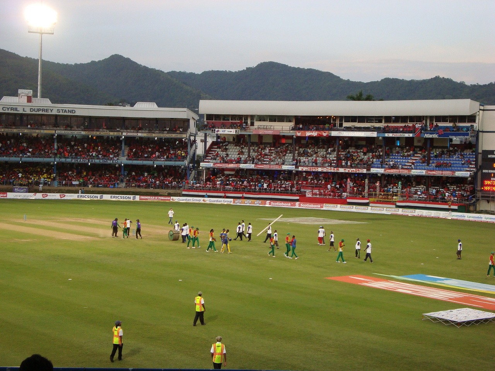

Cricket is the most popular sport in India and the most played game in India. Cricket's popularity in India is unrivalled compared to the amount of attention it generates in any other country.In terms of football passion, Brazil and Argentina are close, but the sheer number of cricket fans in India tilts the scale eastwards.There are several explanations for cricket's continued appeal.
